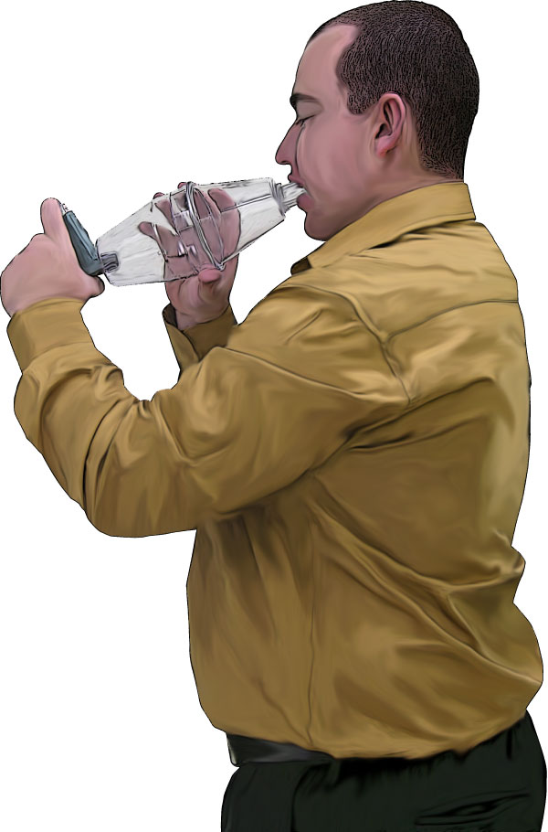
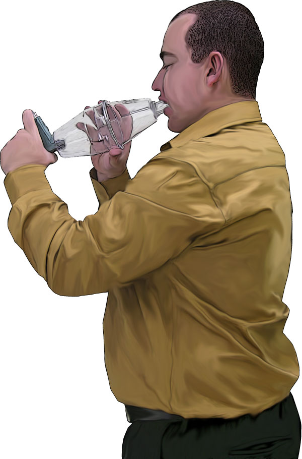

4. Medical Emergencies
4. Medical Emergencies
Anaphylaxis
Asthma
Croup and epiglottitis
Diabetes
Drowning
Epilepsy
Fainting
Febrile convulsions
Heart conditions
Hyperventilation
Meningitis
Poisoning
Stroke
Environmental emergencies
Bites and stings
This section covers common medical conditions that may threaten a casualty's life unless quick action is taken to treat those conditions.The early identification and treatment of these conditions can save a life.
By the end of this section you should be able to:
Recognise and manage medical emergencies.
Recognise and manage poisoning.
Recognise and manage environmental emergencies.
Identify and treat bites and stings